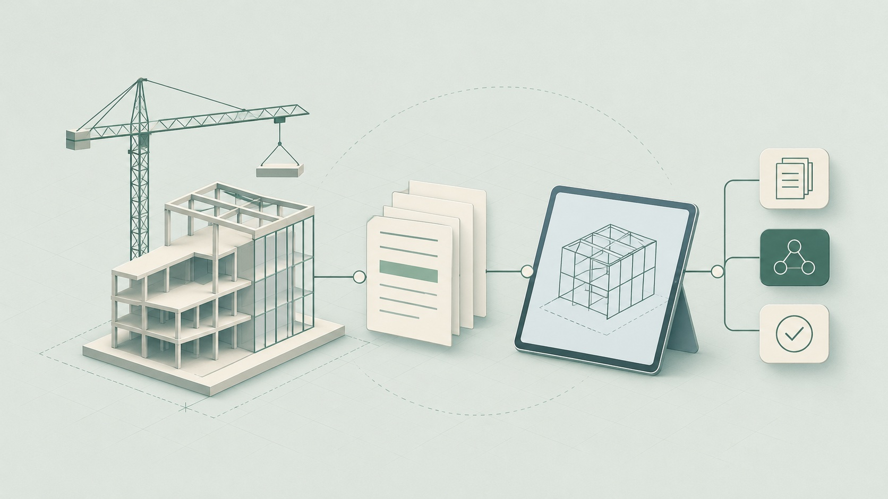
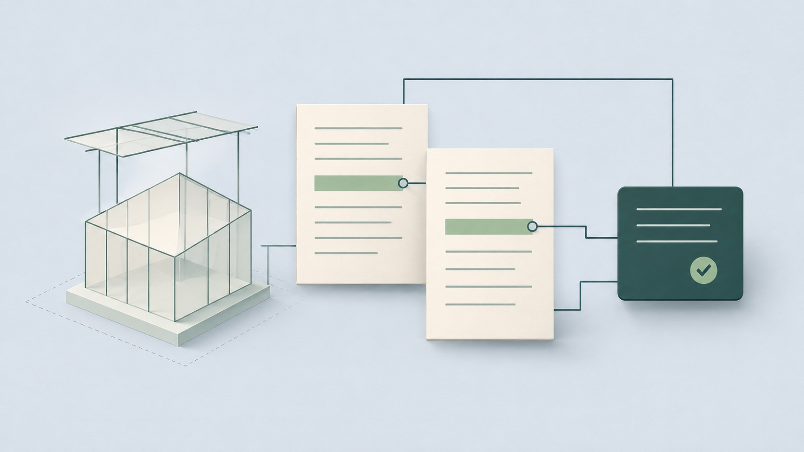
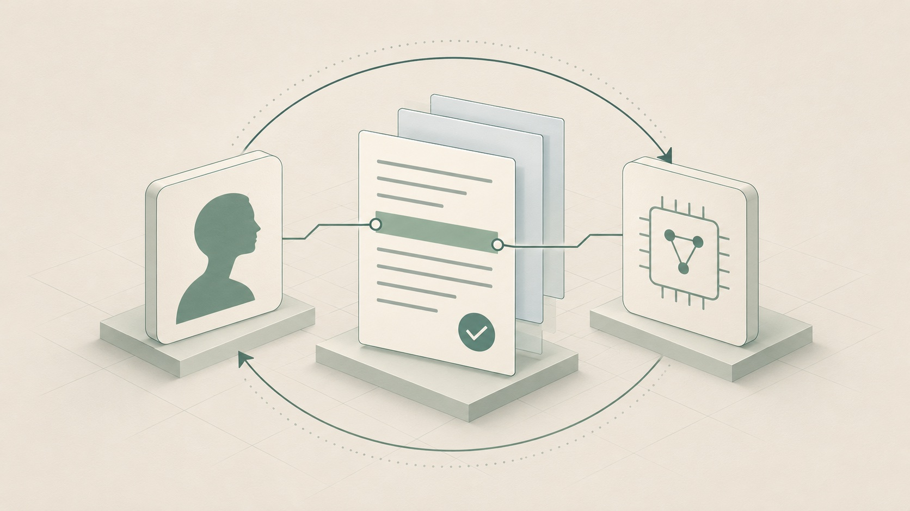
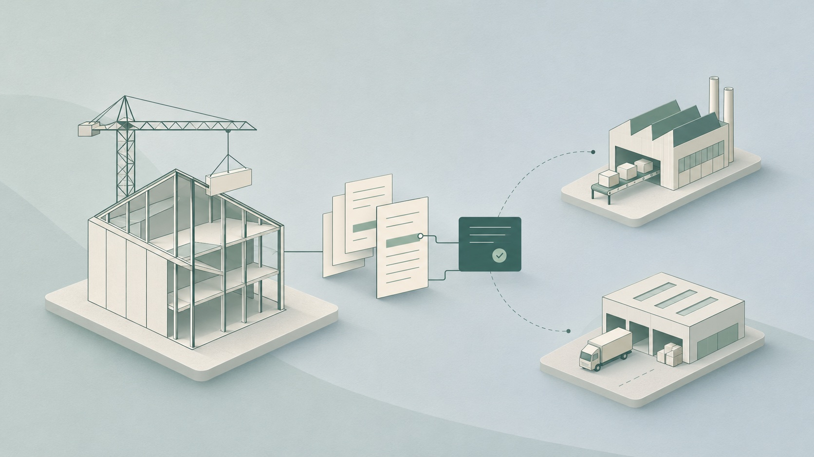

Research goal
Industry digitalization
Start with document-heavy workflows and industry pain points. Develop testable AI tools and investigate their usefulness, adoption and effects on productivity.
Profile (contact)
TomApplied AI for construction decision support.
I work on AI product prototyping and evidence-grounded review, starting with practical problems in construction management.
Open to applied AI roles and PhD opportunities.
For contact details, please refer to my CV.
Research (selected work)
Document evidence. Structured review. Human judgment.
AI-generated concept image · Public research prototype
PhD research interests
The question connecting my interests
How can evidence-grounded human–AI workflows improve the quality and efficiency of professional decisions in construction management?

Research goal
Start with document-heavy workflows and industry pain points. Develop testable AI tools and investigate their usefulness, adoption and effects on productivity.

Technical approach
Study how source authority, applicability and provenance can guide AI-assisted review, while making unsupported findings and missing information visible.

Collaboration & evaluation
Investigate how expert feedback can inform evaluation and iterative improvement, and where professional judgment should remain part of the workflow.

Longer-term direction
Once methods mature in construction management, examine what transfers to other industries and what needs new domain evidence and evaluation.
Construction and engineering management provide the starting point. Productivity improvements and cross-sector transfer are research goals. Images are AI-generated concepts.
Selected project
Code, worked examples and verification records are available. The submitted manuscript remains private.
Reviewing tender documents involves finding relevant requirements, checking which sources apply, and deciding where the available evidence is incomplete. The prototype combines hierarchical retrieval, deterministic evidence checks and structured findings for professional review.
Public research summary
Question. How can source authority, applicability and provenance constrain AI-assisted tender review, while distinguishing supported findings from unresolved evidence gaps?
Approach. A four-level retrieval cascade connects findings to source material. Deterministic checks inspect the model response, and structured outputs retain evidence locations and items needing human review. Expert feedback informs evaluation design.
Public evidence. Existing synthetic examples show ranked source retrieval, correction of unsupported confirmation claims and separation of readable text from an unread chart. These demonstrate specific software behaviors. Real-project effectiveness and productivity remain to be evaluated.
Inspect the outputs
Saved outputs from public synthetic data and fixtures. These are independent component examples, with no live LLM call.
Public sample · BM25 retrieval
The synthetic document says tender documents are available for three calendar days, from 1 to 3 September 2026.
招标文件发售期为3个自然日，自2026年9月1日至2026年9月3日止。
Search over 20 public sample chunks. This is a lexical retrieval example, not a rerun of the full hybrid retrieval benchmark.
View source JSONSaved retrieval output
| Rank | Source locator | BM25 score |
|---|---|---|
| 1 | Article 16 / 第十六条 | 17.543998 |
| 2 | Article 21 / 第二十一条 | 7.615772 |
| 3 | Article 23 / 第二十三条 | 7.375278 |
d1a045e563eba90b8893Description of the repository’s stored sample, rather than a statement of current legal applicability.
Independent preset-response fixtures
The gate processes two preset findings. One lacks independent confirmation; the other cites a source absent from the runtime evidence.
These fixtures were not generated from the retrieval example. They show how existing checks revise a response.
View input and output JSONSaved gate results
A preset confirmation claim is revised because independent confirmation is absent.
requires_human_legal_reviewThe unregistered citation is removed. The output asks for human confirmation.
legal_evidence = []Both saved gate statuses: corrected. No human decision is supplied.
Independent document-visibility fixture
The source includes a progress-plan narrative. The chart page has not been parsed, so its contents remain pending verification.
The table presents selected fields from the saved output. It preserves the incomplete review state.
View source JSONSaved review record · SYN-U30
| Material | Observed state | Source locator |
|---|---|---|
| Plan narrative | Observed | p186-b6 |
| Chart | Pending verification | None available |
partially_observed_requires_reviewFunctional verification
97 core + 28 bundle unittest cases, with five additional script suites reported separately.
Run record · 26 Nov 2026Historical synthetic benchmark
98.08% hierarchical Evidence Hit@5; MRR 0.9135. Measures retrieval within the expected source level and phase.
Metric definitions and scopeWhat remains to be evaluated
Functional checks and synthetic benchmarks do not establish productivity gains, deployment readiness or cross-sector transfer.
Research evidence and limitsThe retrieval metric is a historical repository result, not a new measurement from this website update. Public examples and verification records remain directly accessible in the repository.
Contribution & collaboration
I support architecture design, review and accept outputs, refine the program and develop evaluation plans. The artifacts below make the related project behavior inspectable.
Architecture support
I assist with program architecture design. The public workflow documents retrieval, evidence checks, structured findings and human review.
Related evidence: system workflowOutput acceptance & refinement
I review and accept results, and adjust and optimize the program. The public examples expose corrected conclusions and incomplete-document states for inspection.
Related evidence: saved examplesEvaluation planning
I develop evaluation plans. Expert participants help check effectiveness and inform evaluation design through interviews; the public repository includes an expert-review protocol.
Related evidence: review protocolAI tools assist code implementation and experimental table preparation. Expert participation informs evaluation and effectiveness checks; the public automated tests document software behavior.
Industry & doctoral opportunities
Industry opportunities
I’m interested in rapid AI product implementation and decision-support workflows, connecting industry needs with testable prototypes and clear evaluation.
Explore the product perspectiveDoctoral opportunities
I’m interested in research on human–AI collaboration, traceable evidence and decision support, with construction and engineering management as the starting point.
Explore the research perspectiveThis website complements my CV. Please use the contact details in my CV to get in touch.
GitHub profile